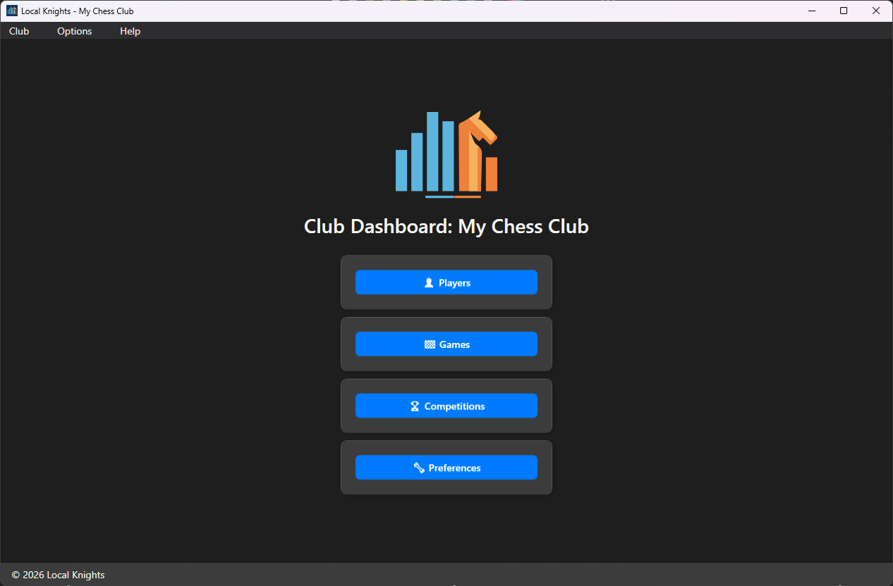
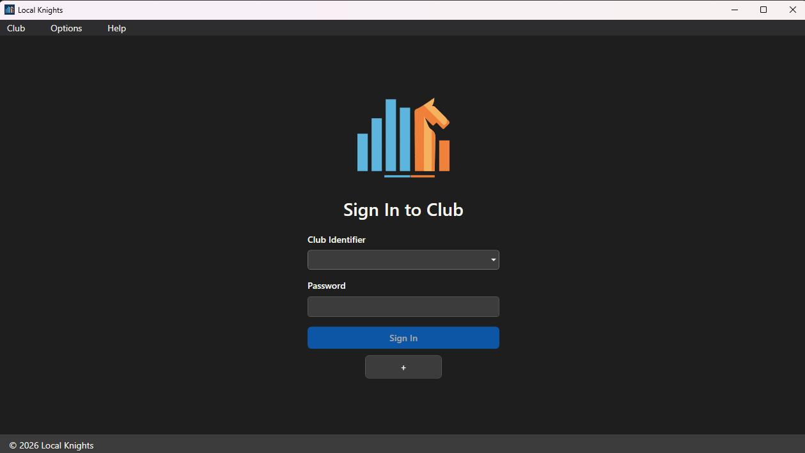
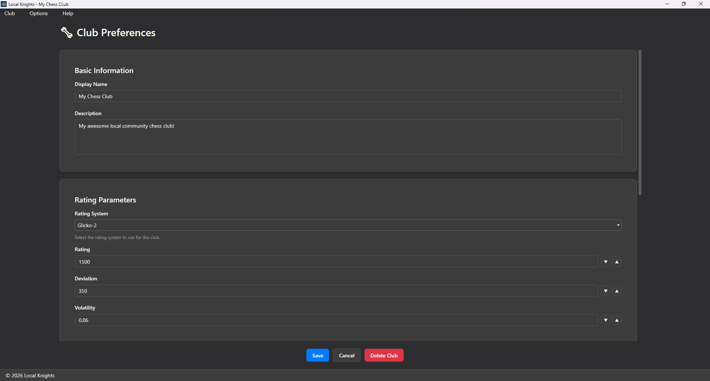

Own your data
Everything runs locally on the club owner’s computer. No mandatory cloud services, no hosted backend, no subscription dependency.
Open source. Local-first. Club-ready.
Run your chess club from one modern desktop app. Register players, record games, organize competitions, maintain ratings, and keep full ownership of your data without cloud lock-in or server overhead.

Why Local Knights
Everything runs locally on the club owner’s computer. No mandatory cloud services, no hosted backend, no subscription dependency.
Your club lives in a single encrypted SQLite database file. Backup and restore stay straightforward without server maintenance.
Manage Swiss, Round-Robin, Knockout, and two-player Match events with pairings, rounds, standings, and results in one workflow.
Track internal club ratings with Glicko-2 or Elo and keep player strength data organized across multiple time formats.
Link profiles to Chess.com, Lichess, FIDE, and USCF identifiers and enrich player records with external rating data.
Modern navigation, responsive layouts, dark and light themes, and multilingual support for English and Brazilian Portuguese.
What you can do
Register players, keep rich profiles, record games, and centralize club history in one local-first application.
Create competitions, generate pairings, follow each round, and track standings without spreadsheets or ad hoc tooling.
Create or open the club database, configure club preferences, add players, and begin recording games or tournaments immediately.


Screenshots